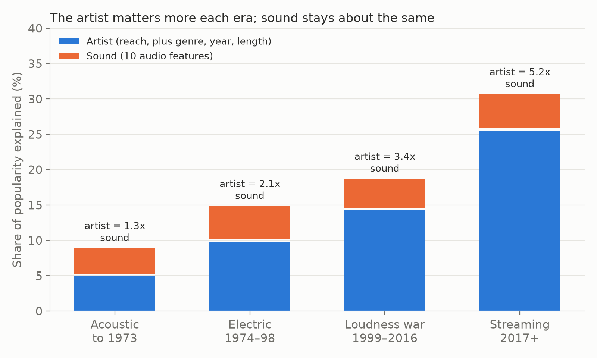
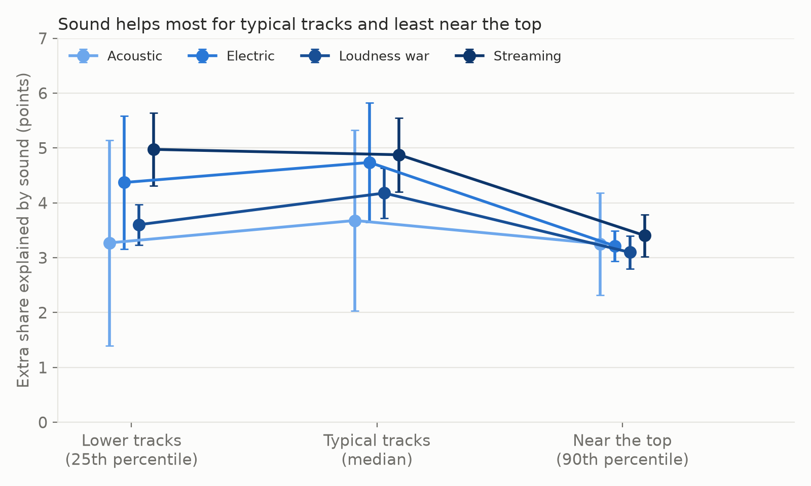
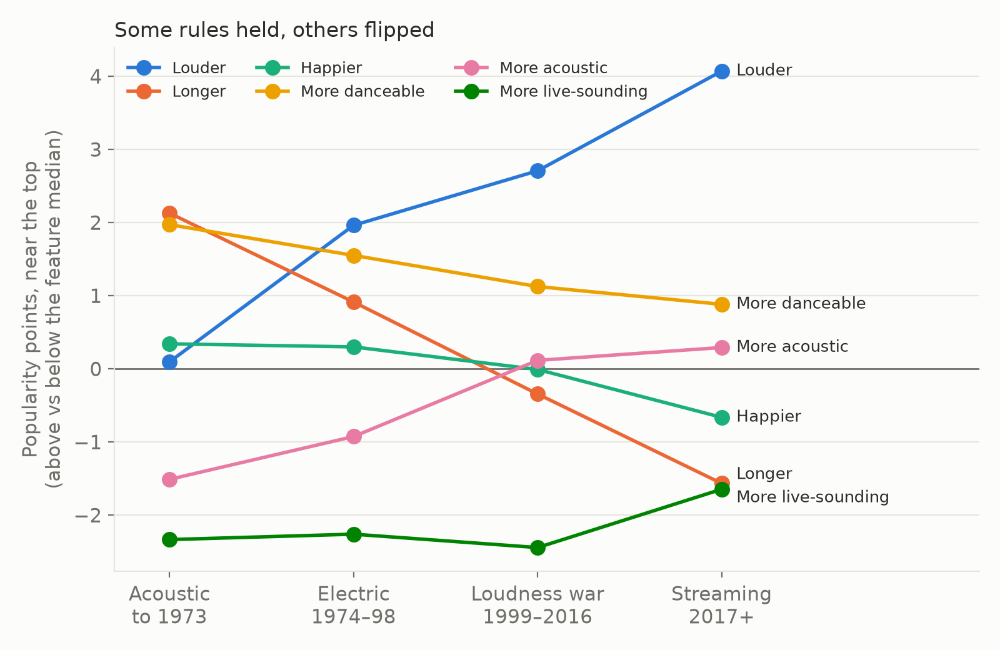

soundstages · Ethan Brown
Is sound what makes a song big?
Not really. Sound helps typical songs the most and the biggest songs the least, where the artist's reach takes over. The artist (their reach, plus genre, release year and track length) predicts 8 to 10 times more of a song's popularity than its sound does, and that gap has widened. The artist mattered about twice as much as sound for 1974–98 songs and about five times as much in the streaming era.
Sound held flat while the artist's share grew
At the median song, sound adds 3.7 to 4.9 points in every era. The artist's share is what moved, from 5% of popularity for songs before 1974 to 26% for songs since 2017. I believe streaming leans on artist reach, with playlists and recommendations surfacing artists people already follow. The models don't test that directly.

Sound matters most for typical songs
In every era, sound adds the most for typical and lower songs and the least near the top, where the artist does most of the work.

Some rules held, others flipped
- Held: near the top, studio recordings beat live ones and danceable tracks do better, in every era.
- Grew: loudness went from irrelevant before 1974 to the biggest sound effect in the streaming era.
- Flipped: longer, happier songs did better in older eras; shorter, moodier songs do better now.

Methodology
- Every model is tested on artists it never trained on.
- Each model runs on the artist alone and again with the 10 audio features added; the gap is sound's contribution.
- Within one artist's own catalog, sound still helps (3.6% → 6.5% explained), so it isn't just recognizing the artist.
- Quantile regression and quantile XGBoost cover the whole distribution, not only the average.
Limits
- Popularity is a November 2026 snapshot. For old songs it measures which ones survived, for new songs which ones are catching on, and era comparisons mix the two.
- The distribution analysis covers the 1.83M tracks with popularity above 0.
- Ten audio features describe sound coarsely, which caps how much sound can explain.